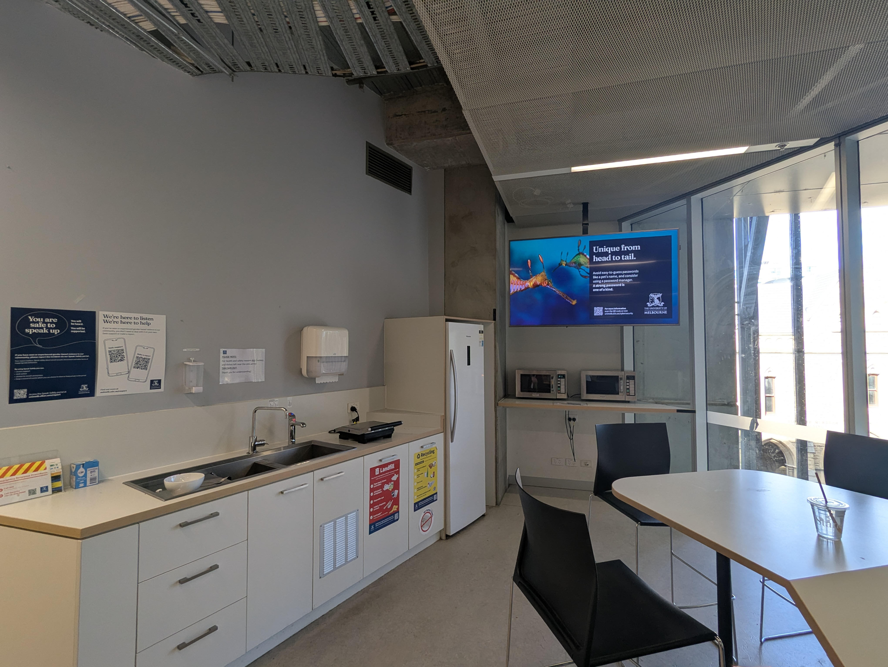
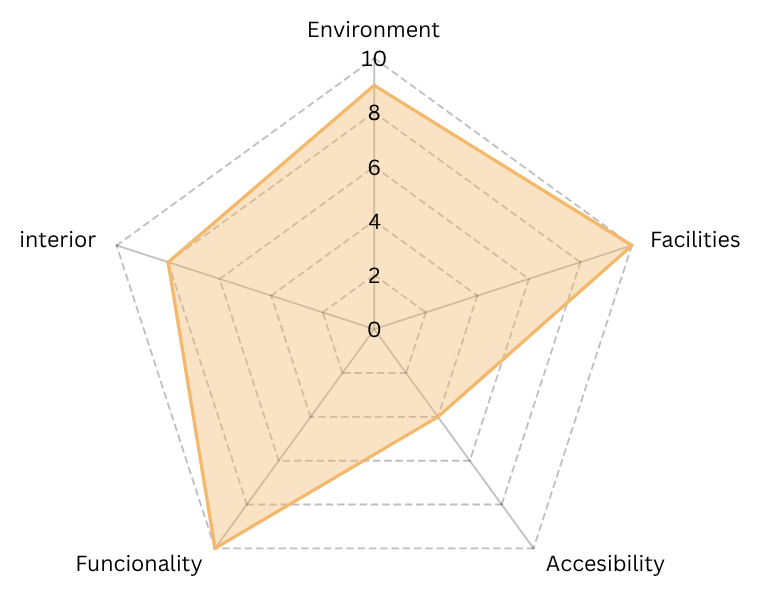

Glyn Davis Building Level 2 Kitchenette

Overall Rating:
8.2/10
Upon entering the Glyn Davis Building proceed to the elevator, or take the stairs, to reach level 2. From there, navigate to the Kitchenette by following the dedicated signage. These microwaves are a bit annoying to access... so it is only reccomended to use them if you are within the Glyn davis building.
Leave a comment about this microwave!